Funkcia v R-ku: Budeme používať funkciu sarima (AR proces je špeciálnym prípadom SARIMA procesu) z knižnice astsa (astsa = applied statistical time series analysis).
Modelujeme rozdiel medzi dlhodobou a krátkodobou úrokovou mierou
Načítajte dáta a vytvorte premennú spread
rs <- read.table("http://www.iam.fmph.uniba.sk/institute/stehlikova/cr20/data/RSQ.txt") # short term rate
r20 <- read.table("http://www.iam.fmph.uniba.sk/institute/stehlikova/cr20/data/R20Q.txt") # 20Y rate
spread <- r20 - rsZ premennej spread vytvoríme object typu time-series, ktorý bude obsahovať informáciu o časovej štruktúre dát Použijeme funkciu ts:
Použitie funkcie ts: ts(data, frequency, start, ...)
data - naše pozorovania
frequency - frekvencia s akou naše dáta berieme (1 - ročné, 4 - kvartálne, 12 - mesačné, 356 - denné, …)
start = c() - Buď jedno číslo - rok odkedy berieme pozorovania, alebo vektor velkosti 2 - prvá hodnota označuje rok začiatku našich pozorovaní, druhá hodnota označuje, kde v daný rok začať v závislosti od zvolenej frekvencie
Napríklad zoberieme mesačnú frekvenciu - frequency = 12, start = c(2020, 3) označuje čas prvého pozorovania rovný 01.03.2020
(V prípade denných dát, frekvencia 356, špecifikujeme konkrétny deň, napríklad 19.10.2020 = c(2020,292) )
spread <- ts(data = spread, # data su premennej spread
frequency = 4, # su kvartalne
start = c(1952,1)) # zacinaju v 1. kvartali roku 1952
class(spread) # budeme vidiet, ze uz je to casovy rad## [1] "ts"Vykreslíme teraz priebeh - na x-ovej osi budú správne časy: Knižnica ggfortify nám umožní kresliť grafy pre object ts pomocnou knižnice ggplot2. Funkcia autoplot(ts)
Úloha: Zobrazte výberovú autokorelačnú funkciu. 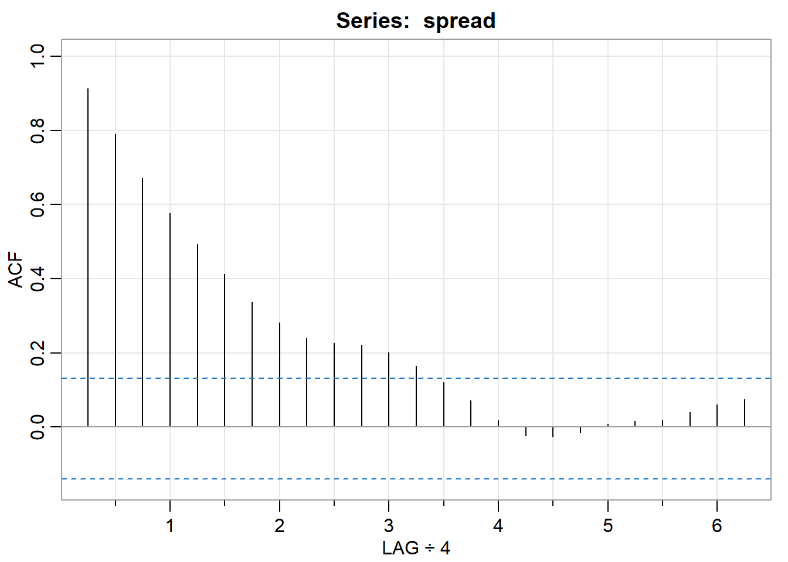
## [1] 0.91 0.79 0.67 0.58 0.49 0.41 0.34 0.28 0.24 0.23 0.22 0.20
## [13] 0.16 0.12 0.07 0.02 -0.02 -0.03 -0.01 0.01 0.02 0.02 0.04 0.06
## [25] 0.07Na prednáške sme videli, že hoci sa podobá na ACF procesu AR(1), nie je to dobrý model pre dáta. Zopakujeme to - odhadneme model a skontrolujeme rezíduá.
Použitie funkcie sarima:
sarima(data, p, k, 0) # AR(p) model pre k-te diferencie premennej data
sarima(data, p, 0, 0) # AR(p) model pre premennu data
model <- sarima(data,p, 0, 0, details=FALSE)Výstup pri spustení funkcie sarima:
Výstup vypísaní objektu model (vytvorený s parametrom details = FALSE):
Úloha:
AR(1):
## $fit
##
## Call:
## stats::arima(x = xdata, order = c(p, d, q), seasonal = list(order = c(P, D,
## Q), period = S), xreg = xmean, include.mean = FALSE, transform.pars = trans,
## fixed = fixed, optim.control = list(trace = trc, REPORT = 1, reltol = tol))
##
## Coefficients:
## ar1 xmean
## 0.9156 1.0473
## s.e. 0.0266 0.5491
##
## sigma^2 estimated as 0.5106: log likelihood = -234.8, aic = 475.61
##
## $degrees_of_freedom
## [1] 214
##
## $ttable
## Estimate SE t.value p.value
## ar1 0.9156 0.0266 34.4589 0.0000
## xmean 1.0473 0.5491 1.9075 0.0578
##
## $AIC
## [1] 2.20189
##
## $AICc
## [1] 2.202151
##
## $BIC
## [1] 2.248769AR(2):
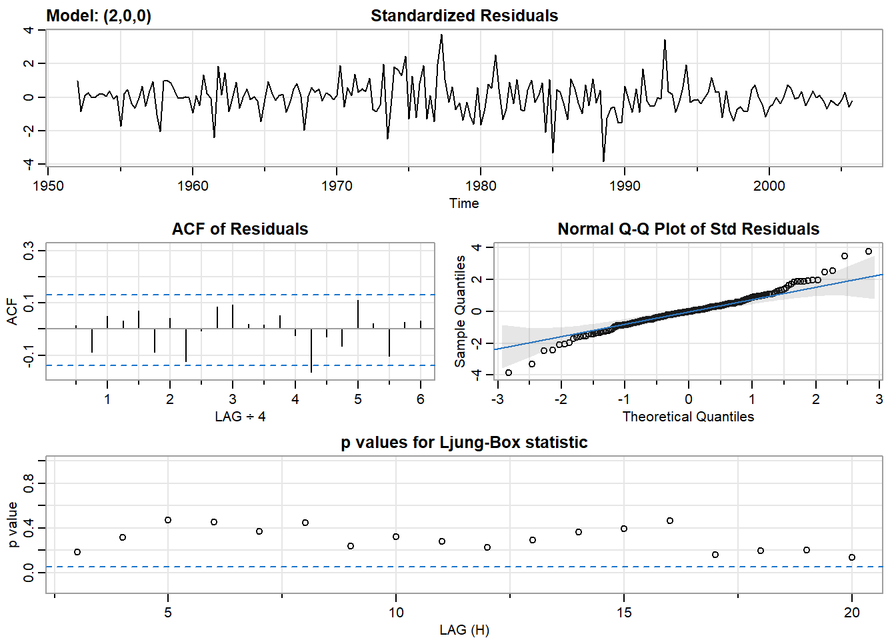
## $fit
##
## Call:
## stats::arima(x = xdata, order = c(p, d, q), seasonal = list(order = c(P, D,
## Q), period = S), xreg = xmean, include.mean = FALSE, transform.pars = trans,
## fixed = fixed, optim.control = list(trace = trc, REPORT = 1, reltol = tol))
##
## Coefficients:
## ar1 ar2 xmean
## 1.1809 -0.2886 1.0449
## s.e. 0.0650 0.0651 0.4212
##
## sigma^2 estimated as 0.4677: log likelihood = -225.42, aic = 458.84
##
## $degrees_of_freedom
## [1] 213
##
## $ttable
## Estimate SE t.value p.value
## ar1 1.1809 0.0650 18.1566 0.0000
## ar2 -0.2886 0.0651 -4.4321 0.0000
## xmean 1.0449 0.4212 2.4807 0.0139
##
## $AIC
## [1] 2.124238
##
## $AICc
## [1] 2.124762
##
## $BIC
## [1] 2.186743V knižnici datasets je viacero zaujímavých časových radov, my sa teraz pozrieme na prietok Nílu:
Konkrétne sa zameriame na vyznačenú časť tohto časového radu - od roku 1910 do roku 1960.
Aby sme získali časť časového radu, použijeme funkciu window:
Úloha:
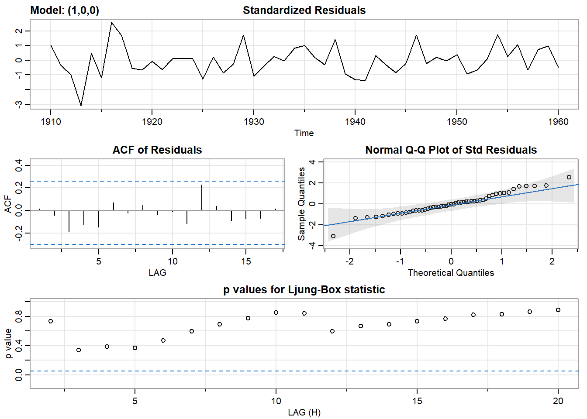
Odhadnite aj AR(2) a AR(3) modely, zhodnoťte rezíduá. Porovnajte ich informačné kritériá.
AR(2)
AR(3) 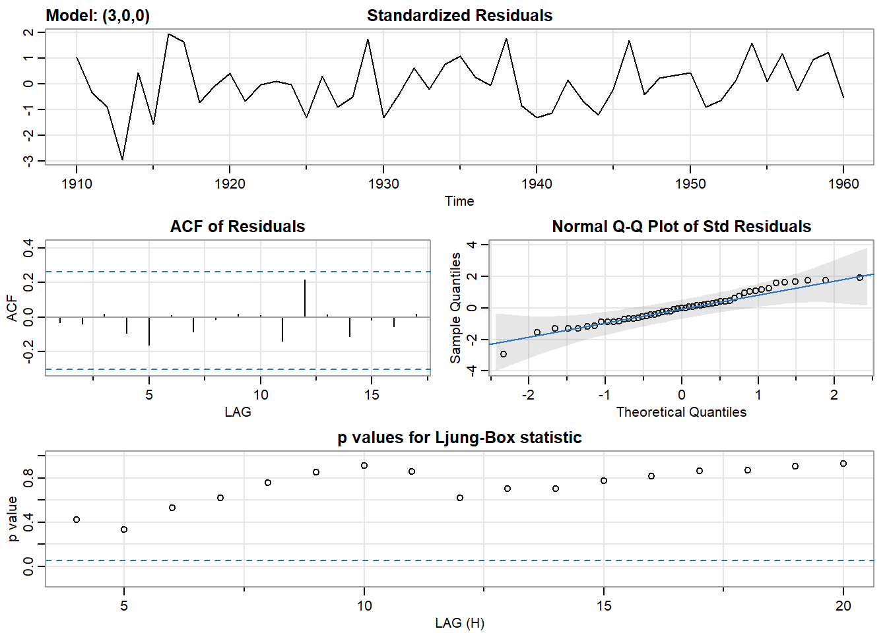
Zistite, či by nestačilo dáta modelovať bez akýchkoľvek autoregresných členov, t. j. ako konštantu plus biely šum.
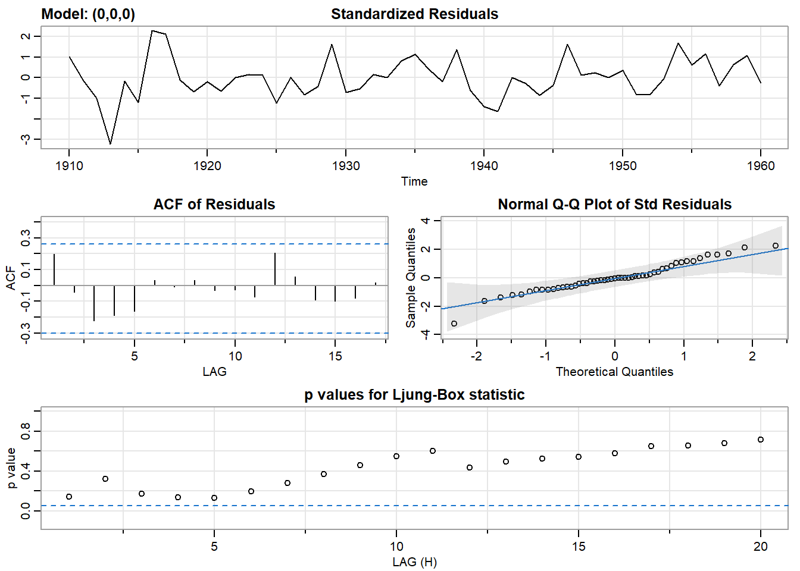
Vygenerujme si dáta - 100 hodnôt autoregresného procesu \(x_t=0.8x_{t−1}+u_t\), kde \(D[u_t]=2\):
Odhadneme AR(1) model:
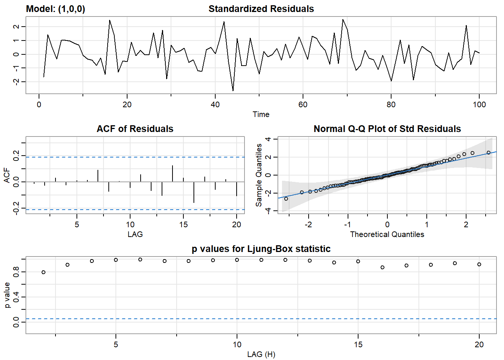
## $fit
##
## Call:
## stats::arima(x = xdata, order = c(p, d, q), seasonal = list(order = c(P, D,
## Q), period = S), xreg = xmean, include.mean = FALSE, transform.pars = trans,
## fixed = fixed, optim.control = list(trace = trc, REPORT = 1, reltol = tol))
##
## Coefficients:
## ar1 xmean
## 0.7930 0.0204
## s.e. 0.0609 0.5756
##
## sigma^2 estimated as 1.518: log likelihood = -163.27, aic = 332.54
##
## $degrees_of_freedom
## [1] 98
##
## $ttable
## Estimate SE t.value p.value
## ar1 0.7930 0.0609 13.0132 0.0000
## xmean 0.0204 0.5756 0.0355 0.9717
##
## $AIC
## [1] 3.325426
##
## $AICc
## [1] 3.326664
##
## $BIC
## [1] 3.403582Odhadnutý model je \[x_t=δ+0.7930x_{t−1}+u_t\]
kde \(δ\) je taká konštanta, aby platilo, že \(E[x_t]=0.0204\) (xmean z výstupu).
Úloha: Dopočítajte konštantu \(δ\) (na kontrolu 0.0042228).
Obsah tejto časti:
Kničnica WDI - World Development Indicators, prístup k dátam budeme mať priamo v R ggplot2 - pekné grafy :)
Kto pozná regulárne výrazy (regular expressions)
Ak je veľa výsledkov, môžeme chciet vypísať niekoľko prvých:
## indicator
## [1,] "6.0.GDPpc_constant"
## [2,] "FB.DPT.INSU.PC.ZS"
## [3,] "NE.GDI.FTOT.CR"
## name
## [1,] "GDP per capita, PPP (constant 2011 international $) "
## [2,] "Deposit insurance coverage (% of GDP per capita)"
## [3,] "GDP expenditure on gross fixed capital formation (in IDR Million)"Pomocou funkcie WDI, ukážka použitia:
indicator sme našli pomocou WDIsearchcountry vo formáte iso2cstart je 1960 a defaultný end je 2020, môžeme ich takto zmeniťiso2c kódy štátov sa dajú nájsť napríklad tu: https://datahub.io/core/country-list alebo pomocou knižnice countrycode v R-ku (https://cran.r-project.org/web/packages/countrycode/)## iso2c country NY.GNP.PCAP.CD year
## 1 DE Germany 46980 2020
## 2 DE Germany 48550 2019
## 3 DE Germany 47140 2018
## 4 DE Germany 43650 2017
## 5 DE Germany 44250 2016
## 6 DE Germany 45750 2015ggplot(data.hdp, aes(year, NY.GNP.PCAP.CD, color = country)) +
geom_line() +
xlab('Year') + ylab('GDP per capita') +
labs(title = 'GDP per capita (current USD)')## Warning: Removed 2 row(s) containing missing values (geom_path).data.hdp je data frame, v ktorom sú naše premennéyear, NY.GNP.PCAP.CD - z dát uložených v data.hdp bude na x-ovej osi premenná year a na y-ovej NY.GNP.PCAP.CDcolor=country - grafy budú odlíšené farebne (preto color) podľa premennej country# GDP per capita (constant 2010 US$)
data <- WDI(indicator = 'NY.GNP.PCAP.KD',
country= c ('FR'),
start = 1975, end = 2019)
# zoradime rastuco podla rokov
data <- data[order(data$year),]
# nasa premenna na modelovanie
log.y <- log(data$NY.GNP.PCAP.KD)
# doplnime casovu strukturu
log.y <- ts(log.y, start = 1975, frequency = 1)Zadanie:
V prípade AR(1) procesu, je overovanie stacionarity zrejmé - stačí sa pozrieť na absolútnu hodnotu autoregresného koeficientu, musí byť v absolútnej hodnote menší ako 1.
Pre všeobecný AR(p) proces je v prednáškach odvodená podmienka stacionarity: proces \((1−α_{1}L−α_{2}L^{2}−…α_{p}L^{p})x_t=δ+u_{t}\) je stacionárny práve vtedy, keď sú všetky korene polynómu \(1−α_{1}L−α_{2}L^{2}−…α_{p}L^{p}\) v absolútnej hodnote väčšie ako 1 (geometricky: mimo jednotkového kruhu).
Otázka: Ukážte, že toto kritériu je v súlade s tým, čo je povedané pre AR(1) proces o jeho autoregresnom koeficiente.
Funkcia v R-ku: Korene polynómu \(1−α_{1}L−α_{2}L^{2}−…α_{p}L^{p}\) nájdeme pomocou funkcie polyroot, ktorá je vysvetlená v slajdoch z prenášky.
Zadanie: Zistíme, či je proces \((1−0.9L+0.6L^{2})x_t=u_t\) stacionárny.
Výpočet v R-ku: Hľadáme korene (a ich absolútne hodnoty) polynómu \((1−0.9L+0.6L^{2})\), teda:
Záver: Korene sú mimo jednotkového kruhu, lebo absolútna hodnota je pre každý koreň väčšia ako 1 ⇒ náš proces JE STACIONÁRNY
Cvičenie: Zistite, či sú stacionárne nasledovné AR(2) procesy:
Zistite, či sú stacionárne nasledovné AR procesy:
Vypočítajte strednú hodnotu stacionárnych procesov.
Nájdite príklad
Príklady tohto typu “nájdite príklad procesu, ktorý … a ukážte, že má požadovanú vlastnosť” budú aj na skúške.
Samozrejme pri AR(1) modeli sme hneď videli, či je stacionárny alebo nie, pri modeloch vyššieho rádu použijeme funkciu polyroot
Hodnoty koeficientov však nemusíme odpisovať, tak by sme navyše dostali iba ich približné hodnoty
Napríklad ak odhadneme model:
Pozrite si str(model.ar3) - štruktúru objektu model.ar3 - a potom vyberte zmodel.ar3 vektor odhadnutých parametrov modelu.
Z tohto chceme tie zložky vektora, ktorých názvy obsahujú ar:
## ar1 ar2 ar3 xmean
## 1.18493093 -0.30509964 0.01391889 1.04510079Dá sa spraviť koef[1:p], ak je to AR(p) model
Budeme mať aj všeobecnejšie modely (koeficienty budú s názvami ma1, ma2, … neskôr aj napríklad sar1, sma1), napríklad:
## ar1 ar2 ar3 ma1 ma2 sar1 sma1
## 1.3167189 -0.7961300 0.3590080 -0.1168011 0.3801231 0.9967049 -0.9797410
## xmean
## 1.0584042Počet členov jednotlivých typov je daný našou špecifikáciou modelu, takže sa znovu dá spočítať, ktoré zložky zodpovedajú členom ar, ktor ma atď. Alternatívou je použiť regulárne výrazy a automaticky vybrať napríklad zložky, ktorých názov začína ar, zložky, ktorých názov začína ma atď. Ak by sme chceli indexy tých, ktoré obsahujú ma, spravili by sme:
## [1] 4 5 7My ale checeme iba tie, ktoré začínajú ma (lebo je tam aj sma1 koeficient, ktorý necheme). Tu prichádzajú na rad regulárne výrazy:
## [1] 4 5Príslušné koeficienty potom sú
## ma1 ma2
## -0.1168011 0.3801231Viac o regulárnych výrazov v R-ku: https://r4ds.had.co.nz/strings.html#matching-patterns-with-regular-expressions
Na prednáške sme videli, že ak pre dáta v premennej spread odhadneme AR(2) model, bude mať dobré rezíduá.
Úloha: Overte stacionaritu získaného modelu.
Cieľom modelovania je často konštrukcia predikcií do budúcnosti.
Funkcia v R-ku: sarima.for
sarima.for(data, n, p, 0, 0) # predikcie pre n pozorovani z AR(p) modelu
sarima.for(data, n, p, k, 0) # predikcie pre n pozorovani premennej data, ak jej k-te diferencie modelujeme ako AR(p) Úloha: Pomocou AR(2) modelu pre dáta spread spravte predikcie na nasledujúce dva roky (máme kvartálne dáta, takže 2 roky predstavujú 8 pozorovaní)
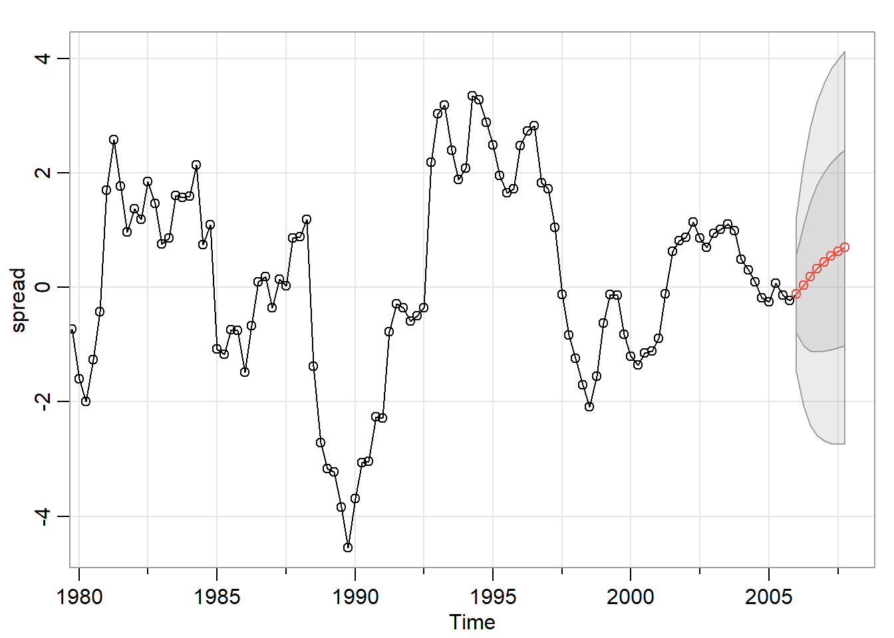
## $pred
## Qtr1 Qtr2 Qtr3 Qtr4
## 2006 -0.11864092 0.03883299 0.19265253 0.32884850
## 2007 0.44528788 0.54348324 0.62583626 0.69474654
##
## $se
## Qtr1 Qtr2 Qtr3 Qtr4
## 2006 0.6838752 1.0582313 1.3006955 1.4585690
## 2007 1.5627848 1.6325528 1.6798046 1.7120892Ak uložíme výstup funkcie sarima.for napr. do premennej predikcie, tak máme prístup k predikciám a štandardným odchýlkam: predikcie$pred, predikcie$se. To je užitočné napríklad vtedy, keď chceme vynechať nejaké posledné dáta, odhadnúť model pomocou zostávajúcich a potom porovnať predikcie s tým, čo v skutočnosti nastalo.
Úloha:
Vynechajte z dát v premennej spread posledné dva roky.
Zo zostávajúcich dát odhadnite AR(2) model. Overte jeho stacionaritu a či môžeme považovať rezíduá za biely šum.
Spravte z tohto modelu predikcie na nasledujúce dva roky.
Nakreslite do jedného grafu farebne odlíšené: dáta použité na odhadovanie modelu, predikcie, predikcie +/- 2 ′× štandardná odchýlka, skutočný vývoj v posledných dvoch rokoch. Na to sa dá dobre využiť funkcia ts.plot, môžeme spraviť napríklad:
ts.plot(data1, data2, data3,
gpars=list(xlab="time", ylab="popis dat",
col=c("red","blue","black"))
)Pritom jednotlivé dáta nemusia mať rovnaký rozsah časov, pre ktoré sú dostupné, R-ko sa postará aj o rozsah y-ovej osi (čo nie je zaručené pri kreslení pomocou plot a potom lines).
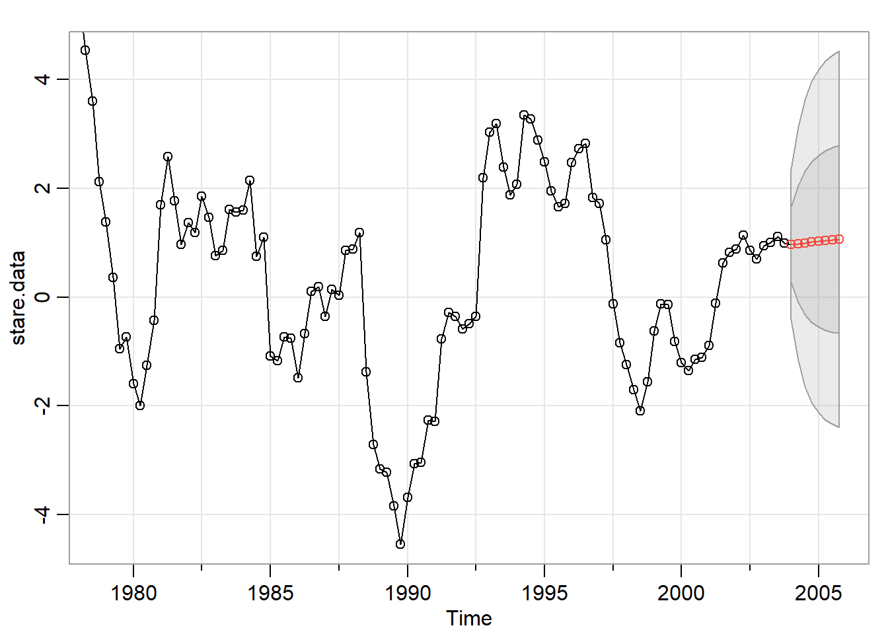
Iný postup (len doplnenie dát do obrázku zo sarima.for): Po vykreslení grafu do neho štandardným spôsobom môžeme pridávať lines, points a pod.
Nepovinné rozšírenie: Zvoľte si vlastný rozsah použitých dát, ktoré chcete zobraziť (teda nie nutne 100, resp. všetky). Namiesto čiar, ktoré ohraničujú predikčné intervaly spravte vyfarbenú oblasť:
Návod: Dokreslovanie pre funkciu ts.plot https://stats.stackexchange.com/questions/154346/fitted-confidence-intervals-forecast-function-r
Krajšie grafy pomocou funkcie autoplot a autolayer:
pallete <- c("#D55E00","#009E73", "gray", "gray")
UB <- predikcie$pred + 2*predikcie$se
LB <- predikcie$pred - 2*predikcie$se
autoplot(window(spread, start = c(1952,1), end = c(2003,4))) +
autolayer(window(spread, start = c(2004,1), end = c(2005,4)), series="Data") +
autolayer(predikcie$pred, series="Forecasts")+
autolayer(UB, series="UB")+
autolayer(LB, series="LB")+
scale_colour_manual(values=pallete)+
theme(axis.title.y=element_blank())
Zoom:
Vyfarbené intevaly spoľahlivosti:
Cvičenie: Modelovali sme rýchlosť rastu HDP autoregresným procesom. Vynechajte teraz z dát posledných 5 rokov. Odhadnite vhodný model a použitím nájdeného modelu spravte predikcie pre:
Nájdeme autokorelačnú funkciu AR(3) procesu \[x_t=1.5x_{t−1}−0.8x_{t−2}+0.2x_{t−3}+u_t,\] a to dvoma spôsobmi:
priamo z Yule-Wolkerových rovníc a diferenčnej rovnice z prednášky
pomocou funkcie v R-ku
Postup:
Vyriešime v R-ku Yule-Wolkerove rovnice - dostaneme ACF(k) pre k=1,2,3 (pozrite ?matrix, ?solve)
V cykle vypočítame nasledjúce hodnoty ACF
rho <- rep(0, times=10)
rho <- .... # prve tri zlozky ako riesenie sustavy
for (i in 4:10) rho[i] <- ... # z diferencnej rovnice## [1] 0.9178082 0.7602740 0.6061644 0.4845890 0.3940068 0.3245719 0.2685702
## [8] 0.2219991 0.1830569 0.1507001Použite funkciu ARMAacf pre náš proces
## 0 1 2 3 4 5 6 7
## 1.0000000 0.9178082 0.7602740 0.6061644 0.4845890 0.3940068 0.3245719 0.2685702
## 8 9 10
## 0.2219991 0.1830569 0.1507001a porovnajte výsledky z oboch postupov. Funkcia ARMAacf by už nemala byť “čiernou skrinkou” ;-)
Čo je parciálna autokorelačná funkcia procesu?
Čím je charakteristická PACF autoregresného procesu rádu p? Prečo? Ako to vyplýva z definície PACF?
Nájdeme autokorelačnú funkciu AR(3) procesu \[x_t=1.5x_{t−1}−0.8x_{t−2}+0.2x_{t−3}+u_t,\] Podobne ako v prípade ACF, aj teraz použijeme funkciu ARMAacf, ale pridáme parameter pacf=TRUE:
ACF aj PACF sa v R-ku počítajú numericky.
Ktoré z nasledujúcich postupností
sa po určitom počte členov vynulujú (a teda tie malé čísla sú v skutočnosti nuly) a ktoré
majú hodnoty, ktoré konvergujú k nule, ale neexistuje index, od ktorého by boli nulové?
Príklad 1
## 0 1 2 3 4
## 1.0000000000 0.0416666667 -0.1979166667 -0.0182291667 0.0386718750
## 5 6 7 8 9
## 0.0055794271 -0.0074554036 -0.0014886556 0.0014166479 0.0003685635
## 10
## -0.0002649014acf.pr1 <- data.frame(
name= as.factor(as.numeric(names(acf.pr1))) ,
value= acf.pr1 )
ggplot(data= acf.pr1, aes(x = name, y = value))+
geom_bar(stat = "identity")Príklad 2
## [1] 3.157895e-01 5.000000e-02 -3.863413e-18 3.927096e-19 -4.622862e-19
## [6] -1.450362e-19 -4.829267e-20 6.640242e-20 5.131096e-20 -2.263719e-20pacf.pr1 <- data.frame(
name= as.factor(1:length(pacf.pr1)) ,
value= pacf.pr1 )
ggplot(data= pacf.pr1, aes(x = name, y = value))+
geom_bar(stat = "identity")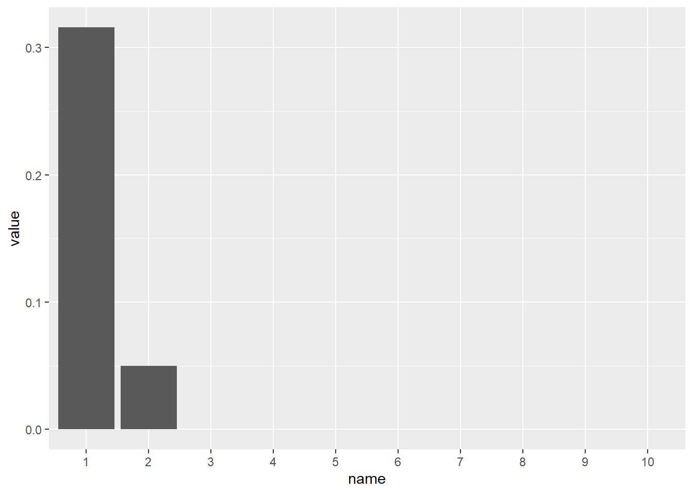
Môžeme + použiť funkciu pacf
acf2 z knižnice astsa vykresliť naraz výberovú ACF aj PACF (tu bude mať navyše ACF odstránenú hodnotu pre lag 0, ktorá sa vždy rovná 1)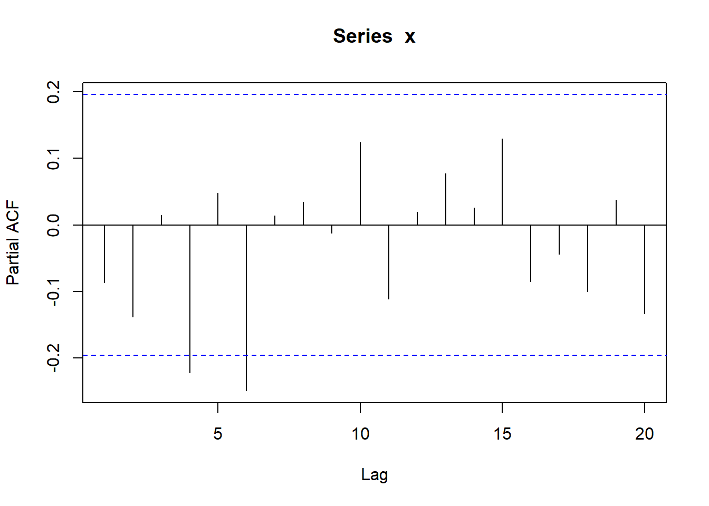
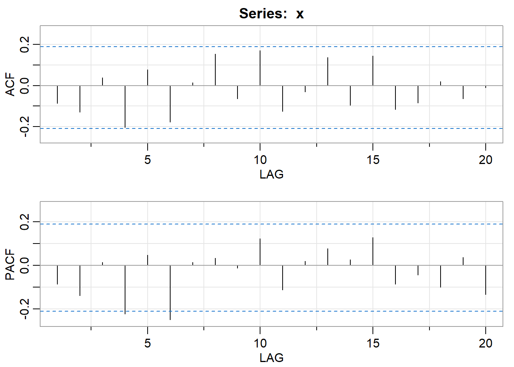
## [,1] [,2] [,3] [,4] [,5] [,6] [,7] [,8] [,9] [,10] [,11] [,12] [,13]
## ACF -0.09 -0.13 0.04 -0.20 0.08 -0.18 0.02 0.15 -0.06 0.17 -0.13 -0.03 0.14
## PACF -0.09 -0.14 0.01 -0.22 0.05 -0.25 0.01 0.03 -0.01 0.12 -0.11 0.02 0.08
## [,14] [,15] [,16] [,17] [,18] [,19] [,20]
## ACF -0.10 0.15 -0.12 -0.08 0.02 -0.06 -0.01
## PACF 0.03 0.13 -0.09 -0.04 -0.10 0.04 -0.13Zadanie: Urcte všetky hodnoty parametra k, pre ktoré je stacionárny AR(2) proces \(x_t=x_{t−1}+kx_{t−2}+u_t\).
Skúsime najskôr numericky: Pre nejaký rozsah parametra k nájdeme absolútnu hodnotu koreňov (pomocou polyroot).
Otázky k nasledujúcemu obrázku:
Preco pre niektoré k je len jedna absolútna hodnota (napríklad k = -1.5 - prerušovaná oranžová čiara), kým pre iné sú dve (k = -0.2,k = 0.5 - prerušovaná zelená čiara)?
Ktoré k vyhovovujú podmienke stacionarity a ktoré nie?
Analytický výpočet:
Precvičenie programovania v R-ku: Spravte samostatne graf z predchádzajúceho obrázku.
V jednej z domácich úloh je úlohou nájsť príklady z kurzov časových radov na zahraničných univerzitách a samostatne ich vyriešiť. Takto sa našlo aj nasledovné zadanie:
Zistite, pre ktoré hodnoty parametra k je stacionárny proces \(x_t=x_{t−1}+kx_{t−2}+kx_{t−3}+u_t\).
Zo vzorového riešenia vyplýva, že malo ísť o proces \(x_t=x_{t−1}+kx_{t−2}-kx_{t−3}+u_t\).
Vyriešte obidve verzie zadania (preklepom sa úloha stala zložitejšou, ale podmienka stacionarity sa dá odvodiť analyticky aj pre prvý proces).
Uvažujme proces \(x_t=δ+α_1x_{t−1}+α_2x_{t−2}+u_t\). Má dva paramametre, takže ich môžeme znázorniť do roviny a odlíšiť tie, ktoré zodpovedajú stacionárnemu a tie, ktoré zodpovedajú nestacionárnemu AR(2) procesu.
n <- 100 # najskor menej, po odladeni napr. týchto 2000
set.seed(123)
alpha1 <- runif(n, min = -2.5, max = 2.5) # rovnomerne na (min, max)
alpha2 <- runif(n, min = -2.5, max = 2.5)
stationary <- rep(NA,n)
df <- data.frame(alpha1, alpha2, stationary)
head(df)## alpha1 alpha2 stationary
## 1 -1.0621124 0.49994480 NA
## 2 1.4415257 -0.83588230 NA
## 3 -0.4551154 -0.05693483 NA
## 4 1.9150870 2.27236914 NA
## 5 2.2023364 -0.08548801 NA
## 6 -2.2722175 1.95175111 NANapíšte funkciu, ktorá rozhodne, či je AR(2) proces so zadanými parametrami stacionárny. Napríklad stat.ar.2(c(1,1)) vráti FALSE.
Nebudeme používať cyklus, ale využijeme funkciu apply
# Predpokladame fungujucu funkciu stac.ar.2, ktora ma ako vstup dvojzlozkovy vektor a vystup TRUE/FALSE
apply(df[, 1:2], # vstupne data = 1. a 2. stlpec df
MARGIN = 1, # znamena, ze sa budu brat po riadkoch
FUN = stac.ar.2) # aplikuje sa funkcia stac.ar.2Potom môžeme pomocou knižnice `ggplot2 kresliť:
qplot(alpha1, alpha2, colour=stationary, data=df)+
scale_color_manual(values = c("#D55E00","#009E73"))Sformulujte tvrdenie o podmienke stacionarity AR(2) procesu (dá sa vyjadriť pomocou troch nerovností pre parametre, ktoré musia súčasne platiť) a dokážte ho. Z grafu môžeme získať hypotézu, ako vyzerá podmienka stacionarity pre AR(2) proces a následne sa ju snažiť dokázať. Alebo ho môžeme použiť ako skúšku správnosti našich výpočtov.
Všetky nasledujúce zadania sú zo starých skúšok. Úlohou je
nájsť vhodný autoregresný model pre zadané dáta
vysvetliť, prečo sú rezíduá vyhovujúce - skomentovať ACF rezíduí aj Ljung-Boxov test, pričom treba presne povedať, aká hypotéza sa testuje a či sa v tomto prípade zamieta alebo nie (a prečo sme s tým výsledkom spokojní)
overiť stacionaritu získaného modelu (napísať polynóm, ktorého korene overujete, aké absolútne hodnoty koreňov vyšli a prečo sme s tým spokojní)
Na skúške je súčasťou kostry zistenie, či môžeme pracovať priamo so zadanými dátami alebo s diferenciami (trend nie je jediným dôvodom diferencovannia - budeme sa tomu venovať neskôr). V týchto zadaniach je povedané, s akými dátami máte pri hľadaní AR modelu pracovať.
Takisto je na skúške na výber širšia trieda modelov, ako sú AR modely. V niektorých prípadoch - vrátane týchto - však AR model stačí.
Dáta z knižnice astsa, z popisu v helpe: New York Harbor conventional regular gasoline weekly spot price FOB (in cents per gallon) from 2000 to mid-2010. Zoberieme dáta od roku 2006.
Nájdite model pre premennú x tak, že budete jej diferencie modelovať AR procesom.
Dáta z knižnice astsa, z popisu v helpe: Leading indicator, 150 months; taken from Box and Jenkins (1970).
Nájdite model pre premennú x tak, že budete jej diferencie modelovať AR procesom.
Nájdite príklad procesov, ktoré majú nasledovné vlastnosti. Pre každý proces dokážte, že má naozaj požadovanú vlastnosť.
Autoregrený proces, ktorého PACF pre lag 3 je nulová.
Autoregrený proces prvého rádu, ktorého PACF pre lag 1 je rovná 0.5.
Autoregresný proces, ktorého ACF je vždy kladná.
Autoregresný proces, ktorého ACF nie je monotónna.